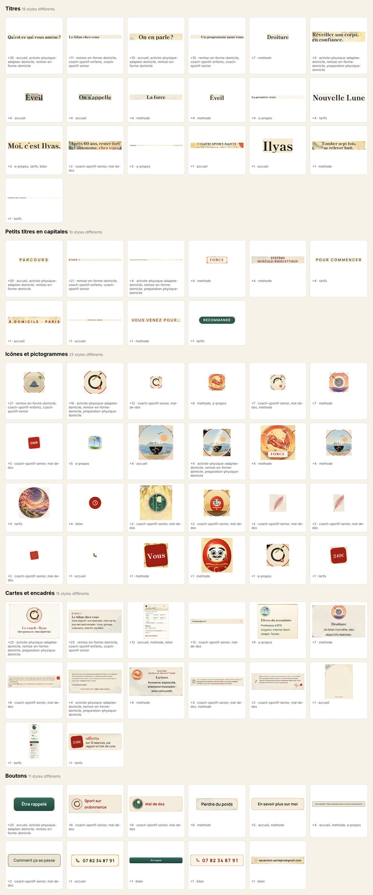
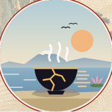
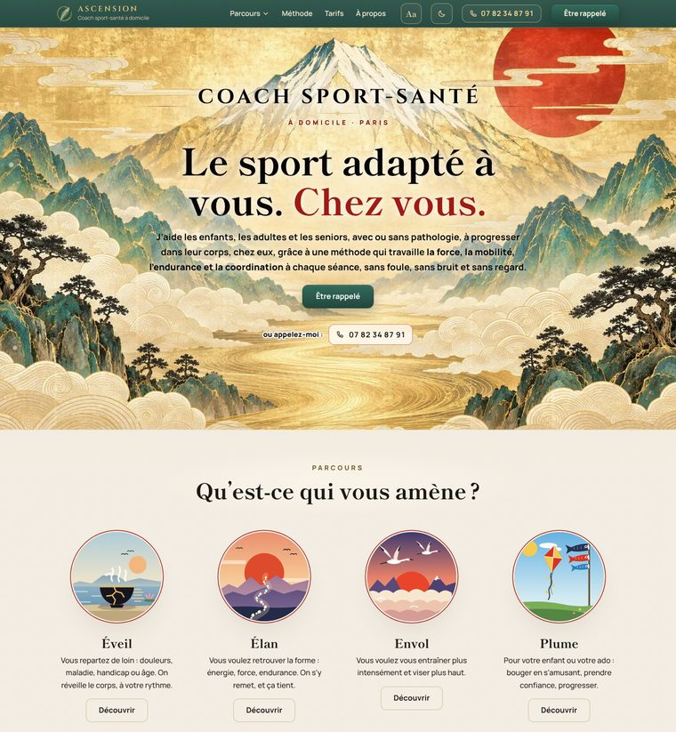
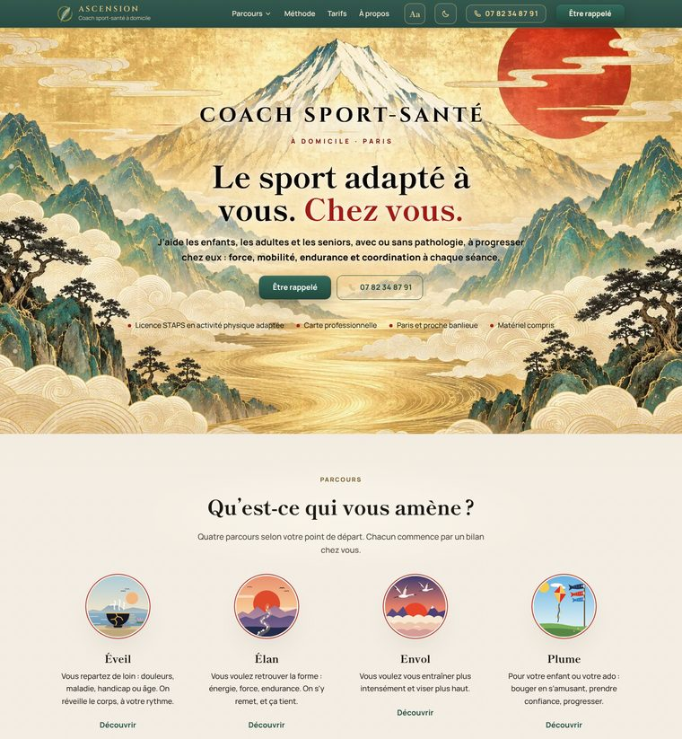
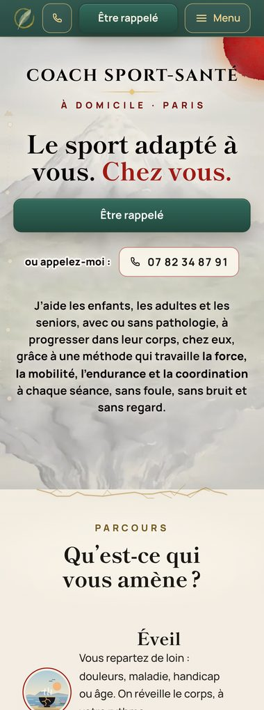
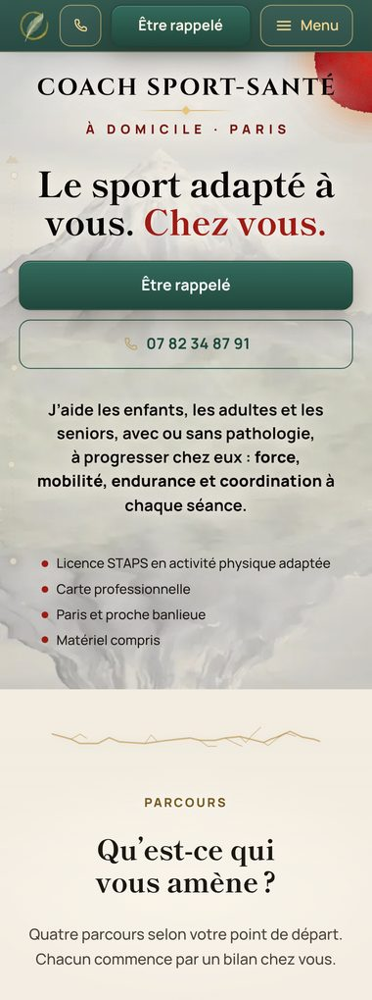
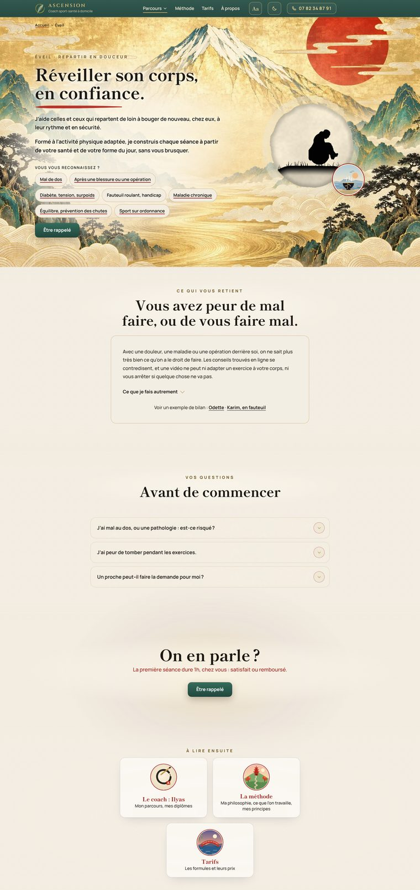
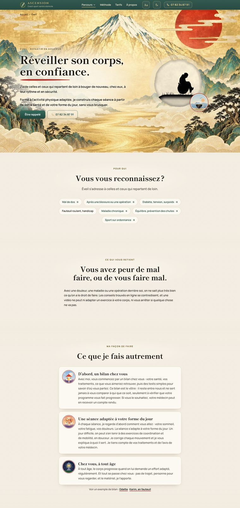
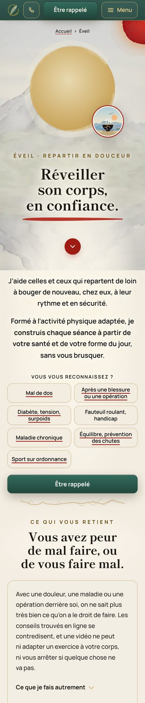
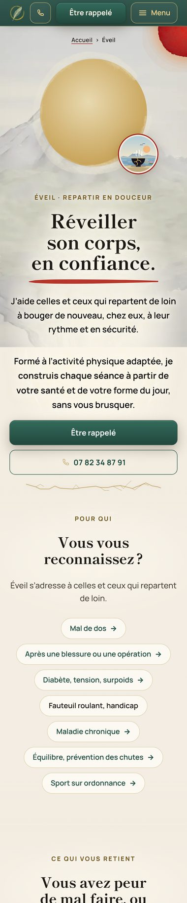

<title>Charte Ascension</title>
<meta name="claude:viewport-fit-sides" content="cover">
<link rel="preconnect" href="https://fonts.googleapis.com">
<link rel="stylesheet" href="https://fonts.googleapis.com/css2?family=Shippori+Mincho:wght@700;800&family=Manrope:wght@500;600;700;800&display=swap">
<style>
/* Mise en page : une colonne de lecture, des planches pleine largeur pour comparer. Les couleurs reprennent celles du site. */
:root{--bg:#F5EFE4;--surface:#FFFCF6;--fg:#1B1814;--doux:#5A5248;--vert:#2C5A4C;--vert-f:#1F4A3E;--or:#765A22;--trait:rgba(176,138,60,.34);--rouge:#9E1B14;--btn-fg:#fff;
--f-titre:"Shippori Mincho",Georgia,serif;--f-texte:Manrope,system-ui,-apple-system,"Segoe UI",sans-serif}
@media (prefers-color-scheme:dark){:root:not([data-theme="light"]){--bg:#0F1424;--surface:#161D31;--fg:#EEE7DA;--doux:#C2B9AB;--vert:#8CC3AF;--vert-f:#B7DCCD;--or:#E2C57E;--trait:rgba(226,197,126,.28);--rouge:#E58A80;--btn-fg:#0F1424;color-scheme:dark}}
:root[data-theme="dark"]{--bg:#0F1424;--surface:#161D31;--fg:#EEE7DA;--doux:#C2B9AB;--vert:#8CC3AF;--vert-f:#B7DCCD;--or:#E2C57E;--trait:rgba(226,197,126,.28);--rouge:#E58A80;--btn-fg:#0F1424;color-scheme:dark}
body{background:var(--bg);color:var(--fg);font:16px/1.65 var(--f-texte)}
.col{max-width:68rem;margin:0 auto;padding-left:max(16px,env(safe-area-inset-left,0px));padding-right:max(16px,env(safe-area-inset-right,0px))}
header.col{padding-block:clamp(40px,7vw,88px) 24px}
section.col{padding-block:clamp(36px,5vw,64px)}
section.col+section.col{border-top:1px solid var(--trait)}
.label{margin:0 0 10px;font:800 .8125rem/1.3 var(--f-texte);letter-spacing:.16em;text-transform:uppercase;color:var(--or)}
h1{font:800 clamp(2.5rem,1.6rem + 3vw,3.75rem)/1.05 var(--f-titre);margin:0 0 14px;text-wrap:balance}
h2{font:800 clamp(1.75rem,1.3rem + 1.5vw,2.4rem)/1.15 var(--f-titre);margin:0 0 10px;text-wrap:balance}
h3{font:800 1.25rem/1.3 var(--f-titre);margin:0 0 6px}
.chapeau{max-width:44rem;font-size:1.125rem;color:var(--doux);margin:0 0 24px}
.intro{max-width:44rem;color:var(--doux);margin:0 0 28px}
.actions{display:flex;flex-wrap:wrap;gap:12px}
.btn{display:inline-flex;align-items:center;justify-content:center;min-height:52px;padding:0 22px;border-radius:12px;font-weight:700;text-decoration:none;border:1.5px solid var(--vert)}
.btn.plein{background:var(--vert);color:var(--btn-fg)}
.btn.contour{color:var(--vert-f);background:transparent}
.lien{display:inline-flex;align-items:center;gap:6px;min-height:44px;color:var(--vert-f);font-weight:700;text-decoration:none}
.lien::after{content:"→"}
:is(.btn,.lien,summary):focus-visible{outline:3px solid var(--or);outline-offset:3px}
.chiffres{display:grid;grid-template-columns:repeat(auto-fit,minmax(150px,1fr));gap:12px;margin:0 0 20px;padding:0;list-style:none}
.chiffres li{background:var(--surface);border:1px solid var(--trait);border-radius:16px;padding:16px 18px}
.chiffres b{display:block;font:800 2.25rem/1 var(--f-titre);font-variant-numeric:tabular-nums;color:var(--rouge)}
.chiffres span{font-size:.95rem;color:var(--doux)}
details{margin-top:8px}
summary{cursor:pointer;font-weight:700;color:var(--vert-f);min-height:44px;display:flex;align-items:center}
details img{display:block;width:100%;height:auto;margin-top:12px;border-radius:12px;border:1px solid var(--trait)}
.regles{display:grid;grid-template-columns:repeat(auto-fit,minmax(min(100%,300px),1fr));gap:16px}
.regle{background:var(--surface);border:1px solid var(--trait);border-radius:16px;padding:22px;min-width:0}
.regle p{margin:0;color:var(--doux)}
.demo{margin:14px 0 0;padding-top:14px;border-top:1px dashed var(--trait);display:flex;flex-wrap:wrap;gap:10px 16px;align-items:center}
.t1{font:800 2rem/1.1 var(--f-titre)}.t2{font:800 1.5rem/1.2 var(--f-titre)}.t3{font:800 1.1rem/1.3 var(--f-titre)}
.ic{display:grid;justify-items:center;gap:4px;font-size:.8rem;color:var(--doux);text-align:center}
.ic img{display:block}
.carte-demo{border:1px solid var(--trait);border-radius:16px;background:var(--bg);padding:12px 14px;font-size:.9rem}
.carte-demo.reco{border:2px solid rgba(176,138,60,.7)}
.modele{display:grid;gap:6px;margin:0;padding:0;list-style:none;counter-reset:m}
.modele li{display:flex;gap:10px;align-items:baseline;color:var(--fg)}
.modele li::before{counter-increment:m;content:counter(m);flex:none;display:grid;place-items:center;width:26px;height:26px;border-radius:50%;border:1.5px solid var(--rouge);color:var(--rouge);font-weight:800;font-size:.85rem}
.sites{columns:2 18rem;column-gap:32px;margin:0;padding:0;list-style:none}
.sites li{break-inside:avoid;margin:0 0 12px}
.sites b{display:block}
.sites span{color:var(--doux);font-size:.95rem}
.paire{display:grid;grid-template-columns:1fr 1fr;gap:16px;margin:0 0 28px}
.paire.tel{max-width:46rem}
.paire figure{margin:0;min-width:0}
.paire figcaption{font:800 .8125rem/1.3 var(--f-texte);letter-spacing:.16em;text-transform:uppercase;color:var(--or);margin:0 0 8px}
.paire img{display:block;width:100%;height:auto;border-radius:12px;border:1px solid var(--trait)}
@media (max-width:560px){.paire:not(.tel){grid-template-columns:1fr}}
.liste{margin:0;padding-left:1.2em}
.liste li{margin:0 0 8px}
.note{font-size:.95rem;color:var(--doux)}
</style>

<header class="col">
  <p class="label">Prototype · rien n’est publié</p>
  <h1>Charte Ascension</h1>
  <p class="chapeau">Même identité, mêmes peintures, mêmes couleurs. Des règles communes pour les titres, icônes, cartes, boutons et espacements, puis l’accueil et la page Éveil réorganisés section par section.</p>
  <div class="actions">
    <a class="btn plein" href="site/index.html">Ouvrir l’accueil</a>
    <a class="btn contour" href="site/activite-physique-adaptee-domicile/index.html">Ouvrir la page Éveil</a>
    <a class="lien" href="https://ascension-sport-sante.github.io/" target="_blank" rel="noopener">Comparer avec le site actuel</a>
  </div>
</header>

<section class="col" aria-labelledby="t-inv">
  <p class="label">1 · Inventaire</p>
  <h2 id="t-inv">Ce que le site affiche aujourd’hui</h2>
  <p class="intro">Relevé automatique sur 11 pages, sur ordinateur. Chaque chiffre compte les variantes différentes réellement affichées.</p>
  <ul class="chiffres">
    <li><b>19</b><span>styles de titres</span></li>
    <li><b>10</b><span>styles de petits titres</span></li>
    <li><b>25</b><span>icônes de tailles ou de formes différentes</span></li>
    <li><b>15</b><span>styles de cartes</span></li>
    <li><b>11</b><span>styles de boutons</span></li>
    <li><b>13</b><span>espacements de sections</span></li>
  </ul>
  <p class="note">Les paragraphes : 58 centrés, 39 à gauche, 10 à droite.</p>
  <details><summary>Voir la planche complète</summary></details>
</section>

<section class="col" aria-labelledby="t-charte">
  <p class="label">2 · La charte</p>
  <h2 id="t-charte">Une règle par rôle</h2>
  <p class="intro">Elle est appliquée à toutes les pages du prototype, pas seulement aux deux pages réorganisées.</p>
  <div class="regles">
    <div class="regle"><h3>Titres : 3 tailles</h3><p>Haut de page, titre de section, titre de carte. Rien entre les deux.</p>
      <div class="demo"><span class="t1">Haut</span><span class="t2">Section</span><span class="t3">Carte</span></div></div>
    <div class="regle"><h3>Petits titres : 1 style</h3><p>Or, capitales espacées, au-dessus du titre de section. Plus de petits titres rouges ou noirs.</p>
      <div class="demo"><span class="label" style="margin:0">Comment ça se passe</span></div></div>
    <div class="regle"><h3>Icônes : selon leur rôle</h3><p>Grand médaillon pour les parcours, moyen pour les étapes et principes, petit pour les listes, sceau rouge pour les preuves, trait pour les outils.</p>
      <div class="demo"><span class="ic">parcours</span><span class="ic">étapes</span><span class="ic">listes</span><span class="ic">preuves</span></div></div>
    <div class="regle"><h3>Cartes : 1 style</h3><p>Coins de 16 px, filet or léger, même ombre. Une seule variante, « recommandé », pour la formule mise en avant.</p>
      <div class="demo"><span class="carte-demo">Carte</span><span class="carte-demo reco">Recommandé</span></div></div>
    <div class="regle"><h3>Actions : 3 niveaux</h3><p>Bouton vert plein pour être rappelé, bouton à contour (téléphone, « en savoir plus »), lien fléché dans les cartes.</p>
      <div class="demo"><span class="btn plein" style="min-height:40px;padding:0 14px">Être rappelé</span><span class="btn contour" style="min-height:40px;padding:0 14px">07 82 34 87 91</span><span class="lien">Découvrir</span></div></div>
    <div class="regle"><h3>Alignement</h3><p>En-têtes de section centrés. Un paragraphe de plus de trois lignes se lit à gauche, en lignes courtes. Jamais aligné à droite.</p></div>
    <div class="regle"><h3>Couleurs</h3><p>Vert pour agir, or pour les petits titres et les filets, rouge pour un mot d’accent et les sceaux. Plus de texte courant en rouge.</p></div>
    <div class="regle"><h3>Espacements</h3><p>Le même souffle entre toutes les sections (104 px sur ordinateur, 64 px sur téléphone) et entre l’en-tête et le contenu.</p></div>
  </div>
  <h3 style="margin-top:28px">Chaque section suit le même modèle</h3>
  <ol class="modele"><li>Petit titre (facultatif)</li><li>Titre</li><li>Une phrase qui dit à quoi sert la section</li><li>Le contenu</li><li>Une action au plus</li></ol>
</section>

<section class="col" aria-labelledby="t-bench">
  <p class="label">3 · Repères</p>
  <h2 id="t-bench">Ce que font les sites sérieux du domaine</h2>
  <p class="intro">Six sites lus : Vitalihome (APA à domicile à Paris), Siel Bleu, CAMI Sport &amp; Cancer, Mon Stade, Wellness Training, Hinge Health. Les règles qui reviennent chez la plupart d’entre eux, et que le prototype reprend :</p>
  <ul class="sites">
    <li><b>Le même gabarit pour chaque section</b><span>Titre, une phrase, le contenu, une action (6 sites sur 6).</span></li>
    <li><b>Une seule action principale, toujours la même</b><span>Même libellé, même bouton plein ; le téléphone en second (5 sur 6).</span></li>
    <li><b>Des cartes d’aiguillage juste après le haut de page</b><span>Toutes construites pareil (5 sur 6).</span></li>
    <li><b>Une famille d’icônes par rôle</b><span>Jamais plusieurs styles pour la même chose (5 sur 6).</span></li>
    <li><b>Des preuves visibles tôt</b><span>Diplômes, carte professionnelle, zone d’intervention (5 sur 6).</span></li>
    <li><b>Un vocabulaire santé précis</b><span>Bilan, activité physique adaptée, sans jargon commercial (6 sur 6).</span></li>
  </ul>
</section>

<section class="col" aria-labelledby="t-av">
  <p class="label">4 · Avant / après</p>
  <h2 id="t-av">Accueil et Éveil</h2>
  <p class="intro">Haut des pages, captures du site actuel et du prototype.</p>
  <h3>Accueil, ordinateur</h3>
  <div class="paire"><figure><figcaption>Avant</figcaption></figure><figure><figcaption>Après</figcaption></figure></div>
  <h3>Accueil, téléphone</h3>
  <div class="paire tel"><figure><figcaption>Avant</figcaption></figure><figure><figcaption>Après</figcaption></figure></div>
  <h3>Éveil, ordinateur</h3>
  <div class="paire"><figure><figcaption>Avant</figcaption></figure><figure><figcaption>Après</figcaption></figure></div>
  <h3>Éveil, téléphone</h3>
  <div class="paire tel"><figure><figcaption>Avant</figcaption></figure><figure><figcaption>Après</figcaption></figure></div>
</section>

<section class="col" aria-labelledby="t-chg">
  <p class="label">5 · Détail</p>
  <h2 id="t-chg">Ce qui a changé</h2>
  <h3>Accueil</h3>
  <ul class="liste">
    <li>Phrase d’accroche raccourcie ; « Être rappelé » et le numéro côte à côte.</li>
    <li>Une ligne de preuves sous les boutons, sur la peinture : licence STAPS en activité physique adaptée, carte professionnelle, Paris et proche banlieue, matériel compris.</li>
    <li>Parcours : une phrase d’introduction, « Découvrir » en lien fléché, cartes rangées à gauche sur téléphone.</li>
    <li>Nouvelle section « Des prix clairs » avant l’appel final, avec le lien vers les formules.</li>
    <li>Appel final : bouton et numéro, texte en couleur normale.</li>
  </ul>
  <h3>Éveil</h3>
  <ul class="liste">
    <li>Le haut de page ne garde que le titre, la promesse et les deux actions.</li>
    <li>« Vous vous reconnaissez ? » devient sa propre section ; les situations qui ont une page portent une flèche.</li>
    <li>« Ce que je fais autrement », caché derrière un clic, devient trois cartes avec icône : le bilan, la séance du jour, chez vous à tout âge.</li>
    <li>« À lire ensuite » sur une rangée, sans carte isolée.</li>
  </ul>
  <h3>Partout</h3>
  <ul class="liste">
    <li>Titres, petits titres, cartes, boutons, icônes et espacements suivent la charte.</li>
    <li>Plus de cartes seules sur leur ligne (Méthode), plus de liste en rouge (Après 60 ans), plus de trait rouge sur le côté des cartes (À propos).</li>
  </ul>
  <p class="note">Les textes viennent du site actuel, déplacés ou découpés. Sont nouveaux : les phrases d’introduction des sections, les titres des trois cartes d’Éveil, la ligne de preuves et la section des prix, tous tirés d’informations déjà présentes sur le site. Le formulaire et le téléphone du prototype ne servent qu’à voir. Après votre avis, la même réorganisation peut être faite sur Élan, Envol, Plume, la Méthode, À propos et les Tarifs.</p>
</section>
